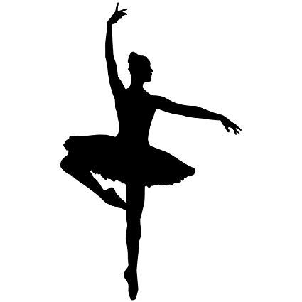

| Course Level | Graduate |
|---|---|
| Duration | 3 months to 3 years |
| Examination Type | Unit System |
| Eligibility | Intermediate cleared or Bachelor’s degree |
| Admission Process | Grade and equivalent marks obtained in 12th class or senior secondary school and equivalent to that. |
| Course Fee | INR 15,000 to 2 Lakh |
| Average | Starting Salary INR 2 to 9 Lacs per annum |
| Top Recruiting Companies | Commission of Fine Arts, Cultural Affairs, Department of Education, Institute of Museum and Library Services, National Archives, National Capital Arts and Cultural Affairs, National Endowment for the Arts, National Endowment for the Humanities, NJ Department of Education, Office of International Education, Peace Corps/AmeriCorps, Smithsonian Institution, Travel and Tourism Department, Indian Idol, Bollywood, AIR, Voice of America, etc. |
| Job Positions | Artist & Repertoire (A&R) Person, Band Leader, Composer/Arranger, Music Attorney, Assist. Art Director, Concert Promoter, Disc Jockey, Film Music Director/Editor, Music Critic, Advertising Specialist, Studio Musician, Music Teacher, Recording Technician, Music Publisher, Singer/Performer, Writer/Music Journalist, among others. |
Career options for Diploma in Music Graduates include those arising behind the scenes or in the business area of music. Almost all entry-level jobs require graduation as necessary qualification. Higher qualifications such as M.A or M. Phil are required for obtaining high-designated jobs in the sector.
After successful completion of the course, the candidate can find career openings both in governmental and non-governmental organizations.
Because there are varieties of jobs and designation, the salaries are also different as per the job and designation of the musician. An average salary of a professional in the music field is INR 20,000 to 40,000 per month.
Graduates in this field can explore their own areas of interest in Music. They can earn well and gain popularity through this art. Talented professionals can gain much popularity in the society through a prestigious job involving music.
Some of the popular professional avenues open to such graduates are listed below with the corresponding salaries offered for the respective positions.